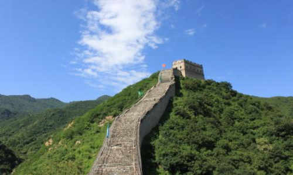

morly旅游圈
共分为南长城和北长城两部分，南长城有7处敌楼，游客相对较少，北长城有12处敌楼，比较难爬。 其中北8楼是八达岭长城海拔最高的敌楼，又名“观日台”，是俯瞰长城的绝佳地点。 这里是游览北京的必到之处，尼克松、撒切尔夫人等三百多位世界知名人士曾登上长城。
一、乘车方式: 公交路线：坐地铁到积水潭A出口往德胜门方向走，都有箭头指明方向的，按着箭头走就行（路上会遇到很多是拉客的，比如说往返30元什么的、“原877/919站点”等等，千万别信，要不就等着被宰吧），一直走到能看到箭楼（类似钟鼓楼），到箭楼下面就能看到877的站点了，车票12元，路上不堵车的情况下大概1小时20-40分钟就到八达岭了。
旅游介绍: 877公交上导游路上会讲一些注意事项，主要的重点是要介绍登城方式，会推销滑车登城的套票。大家也不用担心买或者不买会对自己有什么影响，下车导游会让大家在售票口排队，你爱怎么买就怎么买（走路或滑车）。普通门票40元，滑车票单程80元，往返是100元，小编觉得还是有点小贵，是从熊乐园送到北4楼。。如果是有老人小孩的话，可以买个滑车往返，省不少时间去爬长城北四楼到北八楼的这一段。当然有条件的话小编还是建议可以自己登上去。
二、徒步方式: 八达岭长城的南长城段并未完全开放，向南也只能走到南三楼（尽头）便返回；所以可以直接向北，从北一楼开始登城。指北一楼--北二楼--北三楼--北四楼这一段。 这四座敌楼，可以说整个八达岭长城的43座敌楼形制相仿又各具特色，其中有巡逻放哨用的墙台，也有上、下两层的敌台，但现在所有的二楼通道都已封锁。
旅游介绍: 到达北四楼，可以看到下城滑车。怎么评价滑车呢，售着过山车的价钱（80元），但却没有任何刺激可言；看似蜿蜒曲折的路程，实则两三年分钟就下车了。所以并不建议乘坐滑车。 一过北四楼，便深刻体会到了“居庸之险不在关而在八达岭”这句话了。本就凹凸不平的地面，已经磨到光滑的扶手，再加上不断的45度斜坡，真的是要小心翼翼才能登到海拔888米的北八楼。 北八楼，八达岭长城海拔最高的敌楼，是俯瞰长城最佳之处。但同时也要做好人山人海的准备。9点半到达北八楼，已是无法走到敌楼最近处。 北八楼已算是八达岭长城的尽头，下城便有三种路线： 1.乘坐缆车到滚天沟停车场； 2.沿着绿色的下城路线返回，或者直接沿原路返回（只适合人少时） 3.沿着北九楼，从北十楼下城。 如果条件可以，当然推荐第三种路线，感受一个完整的长城路线~ 北八楼到北十楼之间，是人最少的阶段，但也是长城最陡的阶段。既想欣赏风景，又要时刻低头看路。如果不着急的话，这会是一段非常适合拍照的路程~
tips: 长城途中是有厕所的，就在北7楼往上走的路上你会看到一块休息的空地，哪里能看到一个小卖部，小卖部旁边往里延伸有一条小路，往里走就是厕所了，不收费。小卖部泡面是12元一桶，冰棍儿5元一条
开放时间: 06:30-19:00 (4月1日-6月30日,9月1日-10月31日 周一-周日) 07:00-18:00 (11月1日-次年3月31日 周一-周日) 06:00-19:30 (7月1日-8月31日 周一-周日)
内容整理至网络，如有侵权，请联系我们！1255394075@qq.com
